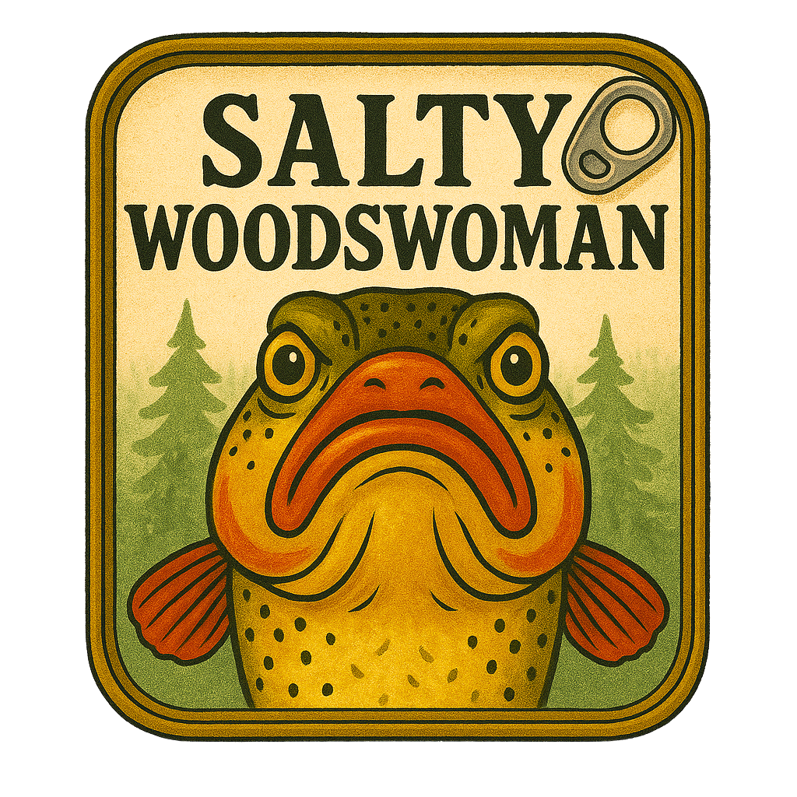

We’re Stocking the Pantry
Be the first to know when our shelves are filled with wild-caught tins and forest-foraged goods. No spam, just salty dispatches.
Got a tin worth shouting about? Email us at tin@saltywoodswoman.com to pitch a product or send a salty recommendation.You’re in good company. We'll reach out when it's time to feast.
